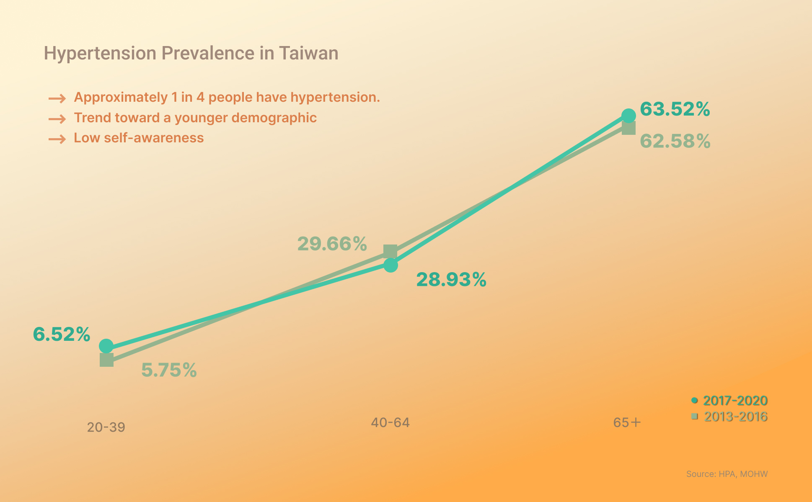
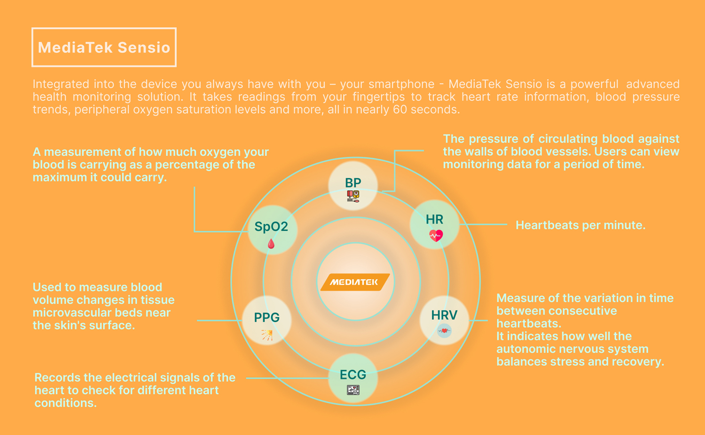
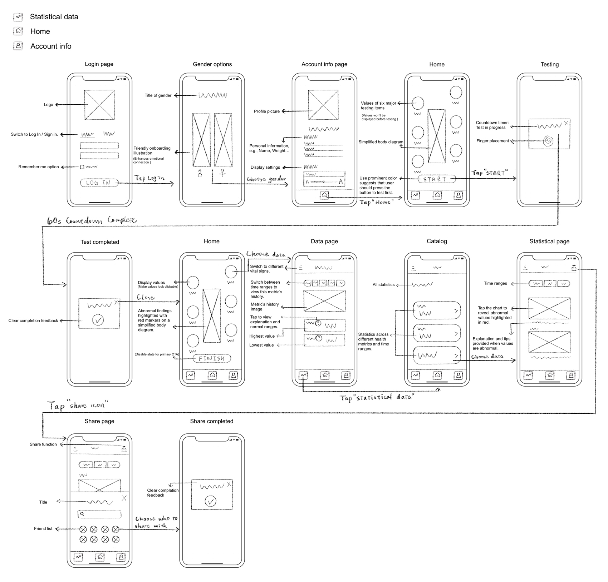

I designed a health diary concept that turns complex biosensing data into clear, easy-to-understand health insights. The goal was to make health monitoring more approachable for younger users and older adults.
Early health risks can be difficult to recognize without regular monitoring. However, biosensing data can be difficult for everyday users to interpret.
Research Insight:
Some young adults may be unaware of their hypertension risk,
highlighting an opportunity for more accessible health education.
Design Opportunity:
Make health data easier to understand and encourage users to engage with their daily health.

Inspiration:
Using MediaTek Sensio biosensing technology, I designed MediaTek
Health—a diary app that makes these invisible signals impossible to ignore.

Market data from 2022 shows that smart wearable adoption rates in Taiwan are significantly lower among the 20-29 and 50+ age groups compared to the 30-39 segment. My research focused on two potential barriers to everyday health monitoring: the cost of dedicated devices and the complexity of digital interfaces.
Younger Adults — Lowering the Entry Barrier
I explored using existing smartphones
as the main access point for health monitoring, reducing the need for an additional dedicated
device.
Older Adults — Improving Readability
I designed adjustable text sizes and a
simplified diary flow to make the interface easier to read and navigate.
Smartphone integration:
smartphones + apps can do health checkups.
(All in one)
1. Needs of the elderly:
Reduce the learning burden for electronic products
2. Needs of young and middle-aged adults:
Reduced discretionary spending
Increased prevalence of health checkups
Promote health and wellness for citizens of all ages.
I mapped the core journey from initial setup and measurement to understanding results and sharing health reports with family members.

Users can adjust text size during profile setup, making the interface more comfortable to read from the start.
A countdown timer provides clear progress feedback during the 60-second measurement, helping users understand how long they need to wait.
A simplified body diagram helps users connect measurement results with relevant areas of the body, making complex information easier to understand.
Users can share health reports with family members, supporting communication and mutual care.
Outcome
The concept brings measurement, result interpretation, and family sharing into one health diary
experience. It explores how biosensing technology can be presented in a way that feels more approachable
to everyday users.
Reflection & Next Steps
This project taught me to consider not only how health data is displayed, but also how people understand
and act on it.